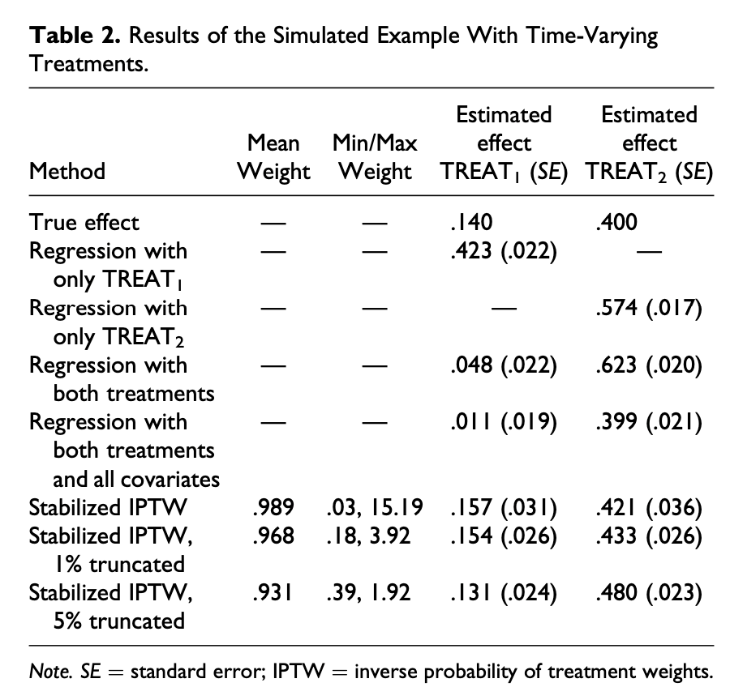

![]()
library(tidyverse)
library(broom)
library(ggdag)
library(dagitty)
library(ipw) # For automatically calculating IPWs
library(geepack) # For GEE models
library(lme4) # For mixed/multilevel models
library(broom.mixed)
library(kableExtra)Since my last two blog posts on binary and continuous inverse probability weights (IPWs) and marginal structural models (MSMs) for time-series cross-sectional (TSCS) panel data, I’ve spent a ton of time trying to figure out why I couldn’t recover the exact causal effect I had built in to those examples when using panel data. It was a mystery, and it took weeks to figure out what was happening.
After poring through all sorts of articles on MSMs and TSCS data like Thoemmes and Ong (2016) and Blackwell and Glynn (2018), along with all sorts of articles on the differences between generalized estimating equations (GEEs), which the epidemiology world (and everyone who does MSMs) seems to love, and multilevel models (which I find a lot more intuitive, and which can be done Bayesianly with brms), I finally figured out what was wrong and how to calculate correct IPWs for panel data.
The main issue lies in the synthetic data I had created for those earlier blog posts. There, I used the fabricatr package to create a country-year panel, which seemed correct and great. However, it didn’t exactly match the data-generating process in situations where the value in one time period (like \(X_t\)) depends on the value from the previous time period (or \(X_{t-1}\)), or autocorrelation. As such, I couldn’t quite get the correct causal effects out (since the data didn’t show interdepdency across time).
After lots of struggle, though, I finally figured out a way to explicitly build this autocorrelation in. And thanks to this delightfully accessible article by Thoemmes and Ong (2016) (ungated free version here), I found clear code for MSMs that I could expand to test on more complex panel data.
In this post, I’ll do a few things: (1) recreate the two-time-period example from Thoemmes and Ong’s appendix (which is stuck in a PDF and really hard to copy/paste out), (2) redo their two-period example with a tidier approach, and (3) expand their two-period approach to multiple years and replace GEEs with multilevel models.
Here we go!
Synthetic data overview
In their paper, Thoemmes and Ong create simulated data based on this DAG, with a time-varying treatment, a non-time-varying confounder, and a time-varying outcome (depression):
Code
# I generally prefer the easier-to-read formula syntax in dagify() (i.e. D1 ~ T1
# + C, etc.), but it doesn't work with subscripted numbers like T[1], so we have
# to use this dagitty syntax instead
depression_dag <- dagitty('dag {
"C" [pos="2.5,2"]
"T[1]" [pos="1,1"]
"D[1]" [pos="2,1"]
"T[2]" [pos="3,1"]
"D[2]" [pos="4,1"]
"C" -> "D[1]"
"C" -> "D[2]"
"C" -> "T[1]"
"C" -> "T[2]"
"D[1]" -> "T[2]"
"T[1]" -> "D[1]"
"T[2]" -> "D[2]"
}') %>%
tidy_dagitty()
ggplot(depression_dag, aes(x = x, y = y, xend = xend, yend = yend)) +
geom_dag_edges() +
geom_dag_point(color = "grey80", size = 12) +
geom_dag_text(color = "black", size = 5, parse = TRUE) +
theme_dag()
Essentially earlier treatment (\(T_1\)) causes some level of depression (\(D_1\)), which causes later treatment (\(T_2\)), which causes later depression (\(D_2\)). This whole chain is influenced by some non-varying confounder (\(C\)).
Original two-period Thoemmes and Ong results
Here’s the original code from the appendix of Thoemmes and Ong (2016) for data with a time-varying continuous treatment and a confounder. It explicitly creates columns for t1, d1, t2, and d2, so it is easy to mathematically make it so that t2 is caused by d1.
Because it’s only two time periods, they calculate the inverse probability weights in two formulas and then multiply them together:
Weights for the first time period:
\[ w_1 = \frac{\phi(T_{i1})}{\phi(T_{i1}\ |\ C)} \]
Weights for the second time period:
\[ w_2 = \frac{\phi(T_{i2}\ |\ T_{i1})}{\phi(T_{i2}\ |\ C, T_{i1}, D_{i1})} \]
Final weights:
\[ w = w_1 \cdot w_2 \]
Here’s their code:
Code
#####################################################################
# iptw demo with time-varying continuous treatment and confounder
#####################################################################
# Felix Thoemmes, October, 2015
#####################################################################
#set seed to replicate results
set.seed(12345)
#define sample size
n <- 2000
#define confounder c
c <- rnorm(n,0,1)
#define treatment at time 1 as function of confounder
t1 <- .1*c + rnorm(n,0, sqrt(.99))
#define depression at time 1 as function of confounder and treat1
d1 <- .1*c + .4*t1 + rnorm(n,0, sqrt(.822))
#define treatment at time 2 as function of confounder and dep1
t2 <- .1*c + .4*d1 + .4*t1 + rnorm(n,0, sqrt(.5196))
#define outcome depression at time 2 as function of confounder, treat1, and dep1
d2 <- .1*c + .4*t2 + .4*d1 + rnorm(n,0, sqrt(.4582))
#add ID variable to do mixed effects models later
id <- rep(1:length(c))
df1 <- data.frame(id, c, t1, d1, t2, d2)
#compute the weights for timepoint 1
#this is a continuous treatment
#therefore we use densities of normal distributions
#weights at time 1
w1 <- dnorm(df1$t1, predict(lm(t1 ~ 1)), sd(lm(t1 ~ 1)$residuals)) /
dnorm(df1$t1, predict(lm(t1 ~ c)), sd(lm(t1 ~ c)$residuals))
#weights at time 2
w2 <- dnorm(df1$t2, predict(lm(t2 ~ t1)), sd(lm(t2 ~ t1)$residuals)) /
dnorm(df1$t2, predict(lm(t2 ~ c + d1 + t1)), sd(lm(t2 ~ c + d1 + t1)$residuals))
#total weights are a product of all time-varying weights
w <- w1*w2
#truncate weights at 5%
tw1 <- ifelse(w < quantile(w, probs = .05), quantile(w, probs = 0.05), w)
tw1 <- ifelse(w > quantile(w, probs = .95), quantile(w, probs = 0.95), tw1)
#truncate weights at 1%
tw2 <- ifelse(w < quantile(w, probs = .01), quantile(w, probs = 0.01), w)
tw2 <- ifelse(w > quantile(w, probs = .99), quantile(w, probs = 0.99), tw2)They they run a bunch of different outcome models with geeglm():
only_t1 <- geeglm(d2 ~ t1, data = df1, id = rownames(df1))
only_t2 <- geeglm(d2 ~ t2, data = df1, id = rownames(df1))
both_t <- geeglm(d2 ~ t1 + t2, data = df1, id = rownames(df1))
both_t_c <- geeglm(d2 ~ t1 + t2 + c + d1, data = df1, id = rownames(df1))
stab_ipw <- geeglm(d2 ~ t1 + t2, data = df1, id = rownames(df1), weights = w)
stab_ipw_1p <- geeglm(d2 ~ t1 + t2, data = df1, id = rownames(df1), weights = tw2)
stab_ipw_5p <- geeglm(d2 ~ t1 + t2, data = df1, id = rownames(df1), weights = tw1)
results <- tribble(
~`Method`, ~`T<sub>1</sub> effect`, ~`T<sub>2</sub> effect`,
"True effect", 0.160, 0.400,
"Naive, only T1", filter(tidy(only_t1), term == "t1")$estimate, NA,
"Naive, only T2", NA, filter(tidy(only_t2), term == "t2")$estimate,
"Naive, both", filter(tidy(both_t), term == "t1")$estimate, filter(tidy(both_t), term == "t2")$estimate,
"Naive, both + controls", filter(tidy(both_t_c), term == "t1")$estimate, filter(tidy(both_t_c), term == "t2")$estimate,
"IPW", filter(tidy(stab_ipw), term == "t1")$estimate, filter(tidy(stab_ipw), term == "t2")$estimate,
"IPW, 1% truncated", filter(tidy(stab_ipw_1p), term == "t1")$estimate, filter(tidy(stab_ipw_1p), term == "t2")$estimate,
"IPW, 5% truncated", filter(tidy(stab_ipw_5p), term == "t1")$estimate, filter(tidy(stab_ipw_5p), term == "t2")$estimate
)| Method | T1 effect | T2 effect |
|---|---|---|
| True effect | 0.160 | 0.400 |
| Naive, only T1 | 0.423 | — |
| Naive, only T2 | — | 0.649 |
| Naive, both | 0.048 | 0.623 |
| Naive, both + controls | 0.011 | 0.399 |
| IPW | 0.157 | 0.421 |
| IPW, 1% truncated | 0.154 | 0.434 |
| IPW, 5% truncated | 0.131 | 0.480 |
And here’s all that compared to what they have in the paper:

It’s identical! I’m chalking any tiny differences up to the fact that set.seed() changed with R 4.0 and they used R 3.x in their paper. (Also the T2-only model is wrong, but that’s probably a typo—the “estimated scale parameter” from that model is 0.574 with an sd of 0.018, which lines up perfectly with the coefficient in the published table, so I think maybe the published paper has the wrong number in the table.)
Also, there seems to be another typo in that table. The true effect of T1 in the table is 0.140, but in the text of the paper, it says the effect should be 0.160, which makes sense—that’s the product of 0.4 × 0.4, or each of the treatment coefficients (\(0.4 \times 0.4 = 0.16\)).
Regardless of those super tiny insignificant typos, we did it! We have their exact results using marginal structural models and inverse probability weights.
Tidier two-period results
The code to generate that data isn’t very tidyverse-friendly and it creates a ton of intermediate vectors. Here’s a cleaner version with dplyr:
set.seed(12345)
n <- 2000
df_nice <- tibble(id = 1:n,
c = rnorm(n, 0, 1)) %>%
mutate(t1 = (0.1 * c) + rnorm(n, 0, sqrt(0.99)),
d1 = (0.1 * c) + (0.4 * t1) + rnorm(n, 0, sqrt(0.822)),
t2 = (0.1 * c) + (0.4 * d1) + (0.4 * t1) + rnorm(n, 0, sqrt(0.5196)),
d2 = (0.1 * c) + (0.4 * t2) + (0.4 * d1) + rnorm(n, 0, sqrt(0.4582)))Also, this original data is wide, with explicit columns for each time period. Let’s make it tidy and pretend the time periods are years (y) and add some lagged columns:
df_tidy <- df_nice %>%
pivot_longer(cols = c(t1, d1, t2, d2)) %>%
separate(name, into = c("variable", "y"), sep = 1) %>%
pivot_wider(names_from = "variable", values_from = "value") %>%
group_by(id) %>%
mutate(across(c(t, d), list(lag = lag))) %>%
ungroup()
head(df_tidy)
## # A tibble: 6 × 7
## id c y t d t_lag d_lag
## <int> <dbl> <chr> <dbl> <dbl> <dbl> <dbl>
## 1 1 0.586 1 -0.546 -1.11 NA NA
## 2 1 0.586 2 -0.853 -1.73 -0.546 -1.11
## 3 2 0.709 1 1.14 0.361 NA NA
## 4 2 0.709 2 -0.0673 -1.30 1.14 0.361
## 5 3 -0.109 1 -0.584 -0.0822 NA NA
## 6 3 -0.109 2 -0.932 0.535 -0.584 -0.0822This is how panel data is typically structured, with rows repeated for each time period. This is good because we can figure out how to structure the weight models and outcome model in a way that uses this structure and compare it to the original t1, d1, etc. models.
Because there are only two time periods, the lagged columns here are missing a ton of data (since you can’t see what the value is for year 0), but it’ll still work.
With the data like this, we can find the weights. We’ll do it both manually and with the ipw package.
Manually, we need to fit two models (a numerator and denominator) and then take the cumulative product of their probability distributions:
\[ w = \prod^t_{t = 1} \frac{\phi(T_{it} | T_{i, t-1}, C_i)}{\phi(T_{it} | T_{i, t-1}, D_{i, t-1}, C_i)} \]
Here we go!
# Remove NAs since ipwpoint() will complain
df_tidy_sans_na <- df_tidy %>%
filter(!is.na(t_lag))
# Manually
# Numerator is lagged treatment + non-varying confounders
model_num <- lm(t ~ t_lag + c,
data = df_tidy_sans_na)
# Denominator is lagged treatment, lagged outcome, time-varying confounders +
# non-varying confounders
model_denom <- lm(t ~ t_lag + d_lag + c,
data = df_tidy_sans_na)
# Probability distributions
num <- dnorm(df_tidy_sans_na$t,
predict(model_num),
sd(residuals(model_num)))
den <- dnorm(df_tidy_sans_na$t,
predict(model_denom),
sd(residuals(model_denom)))
# Make num/den fraction and find cumulative product within each id
df_weights_manual <- df_tidy_sans_na %>%
mutate(weights_no_time = num / den) %>%
group_by(id) %>%
mutate(ipw = cumprod(weights_no_time)) %>%
ungroup()
# Automatically find weights with ipw::ipwpoint()
tidy_weights_auto <- ipwpoint(
exposure = t,
family = "gaussian",
numerator = ~ t_lag + c,
denominator = ~ t_lag + d_lag + c,
data = as.data.frame(df_tidy_sans_na))
df_weights_auto <- df_tidy_sans_na %>%
mutate(ipw = tidy_weights_auto$ipw.weights)Now we can use these new weights in the outcome model:
model_lags_manual <- geeglm(d ~ t + t_lag, data = df_weights_manual,
id = id, weights = ipw)
model_lags_auto <- geeglm(d ~ t + t_lag, data = df_weights_auto,
id = id, weights = ipw)
results <- tribble(
~`Method`, ~`T<sub>1</sub> effect`, ~`T<sub>2</sub> effect`,
"True effect", 0.160, 0.400,
"IPW, original", filter(tidy(stab_ipw), term == "t1")$estimate, filter(tidy(stab_ipw), term == "t2")$estimate,
"IPW, lagged, manual", filter(tidy(model_lags_manual), term == "t_lag")$estimate, filter(tidy(model_lags_manual), term == "t")$estimate,
"IPW, lagged, automatic", filter(tidy(model_lags_auto), term == "t_lag")$estimate, filter(tidy(model_lags_auto), term == "t")$estimate
) %>%
mutate(across(2:3, ~sprintf("%.3f", round(., 3)))) %>%
add_row(`T<sub>1</sub> effect` = "<b>lag(T) effect</b>",
`T<sub>2</sub> effect` = "<b>T effect</b>",
.after = 2)| Method | T1 effect | T2 effect |
|---|---|---|
| True effect | 0.160 | 0.400 |
| IPW, original | 0.157 | 0.421 |
| — | lag(T) effect | T effect |
| IPW, lagged, manual | 0.150 | 0.441 |
| IPW, lagged, automatic | 0.150 | 0.441 |
Those results aren’t identical (I don’t know why!), but they’re close-ish, so whatever. It worked! Instead of using explicit t1, d1, etc. columns, we can do the same marginal structural model with just t and d in a long data frame.
Expansion to multiple-period data
Since that’s all working, now we can do something a little/lot trickier—instead of manually specifying \(T_1\) and \(T_2\), which isn’t really easily scalable to more time periods, we’ll construct the data more generally for any number of years
Tricky interdependent data generating process
The trick here is that we want to have any number of time periods, but also maintain the same DAG relationships. In the small data, these are the two general relationships:
- \(\text{treatment}_t = (0.1 \cdot \text{confounder}) + (0.4 \cdot \text{depression}_{t-1}) + (0.4 \cdot \text{treatment}_{t-1}) + \text{noise}\)
- \(\text{depression}_t = (0.1 \cdot \text{confounder}) + (0.4 \cdot \text{treatment}_{t}) + (0.4 \cdot \text{depression}_{t-1}) + \text{noise}\)
Or in code:
t = (0.1 * c) + (0.4 * lag(d)) + (0.4 * lag(t)) + rnorm(n, 0, sqrt(0.5196))d = (0.1 * c) + (0.4 * t) + (0.4 * lag(d)) + rnorm(n, 0, sqrt(0.4582))
Generating this data in a tidy dplyr way is super tricky, since the t and d columns are interdependent—the data has to be generated rowwise, but we also have to be able to look back a row to get the lagged values of t and d. I’ve seen people like Blackwell and Glynn (2018) get around this by using a for loop to build the data, but I have an aversion to for loops in R since purrr exists, so I spent way too much time trying to figure out a purrr-based way to do this. Others have tried this (like this RStudio Community post), and I asked about it on Twitter, where I got a few cool solutions using purrr::accumulate() and purrr::reduce(), like this fancy accumutate() function from Ian Moran and these solutions from Miles McBain.
There are no loops involved in those solutions, but phew that accumulate/reduce syntax is wonky and I can’t fully wrap my head around it (plus it makes it hard to carry over non-accumulated variables). So I resorted to a loop. Oooof.
It works, though! Let’s test it on just one ID. We’ll generate just one row with t1, t2, d1, and d2, and we’ll remove the noise from each of the columns:
set.seed(12345)
n <- 1
# Remove all noise so that we can compare this with the function version
df_example <- tibble(id = 1:n,
c = rnorm(n, 0, 1)) %>%
mutate(t1 = (0.1 * c),
d1 = (0.1 * c) + (0.4 * t1),
t2 = (0.1 * c) + (0.4 * d1) + (0.4 * t1),
d2 = (0.1 * c) + (0.4 * t2) + (0.4 * d1))
df_example
## # A tibble: 1 × 6
## id c t1 d1 t2 d2
## <int> <dbl> <dbl> <dbl> <dbl> <dbl>
## 1 1 0.586 0.0586 0.0820 0.115 0.137This isn’t tidy data, so technically there are two years here. We’ll keep t1 and d1 as the initial values for year 1, then generate values for 5 years. If we do this right, the t and d values for year 2 should be identical to t2 and d2 here.
# Add a bunch of extra years with empty cells for t and d
df_multiple_years_empty <- df_example %>%
mutate(y = 1) %>%
select(id, y, t = t1, d = d1, c) %>%
add_row(y = 2:5) %>%
# c doesn't vary across time
mutate(id = 1,
c = df_example$c[1])
df_multiple_years_empty
## # A tibble: 5 × 5
## id y t d c
## <dbl> <dbl> <dbl> <dbl> <dbl>
## 1 1 1 0.0586 0.0820 0.586
## 2 1 2 NA NA 0.586
## 3 1 3 NA NA 0.586
## 4 1 4 NA NA 0.586
## 5 1 5 NA NA 0.586
# Now we need to build the interdependent values for t and d with <gasp> a loop
#
# The loop is inside this function---it skips the initial row and then
# iteratively adds new rows. We can't use neat things like lag(t), so instead
# we use df$t[i - 1]
#
# We omit the extra noise for now
dgp <- function(df) {
for (i in 2:nrow(df)) {
df$t[i] <- (0.1 * df$c[i]) + (0.4 * df$d[i - 1]) + (0.4 * df$t[i - 1])
df$d[i] <- (0.1 * df$c[i]) + (0.4 * df$t[i]) + (0.4 * df$d[i - 1])
}
df
}
# Generate all 5 years
df_multiple_years_empty %>%
dgp()
## # A tibble: 5 × 5
## id y t d c
## <dbl> <dbl> <dbl> <dbl> <dbl>
## 1 1 1 0.0586 0.0820 0.586
## 2 1 2 0.115 0.137 0.586
## 3 1 3 0.159 0.177 0.586
## 4 1 4 0.193 0.207 0.586
## 5 1 5 0.219 0.229 0.586If this worked, the t and d values for year 2 should be the same as t2 and d2 here:
df_example
## # A tibble: 1 × 6
## id c t1 d1 t2 d2
## <int> <dbl> <dbl> <dbl> <dbl> <dbl>
## 1 1 0.586 0.0586 0.0820 0.115 0.137They are!
Since we know it works, let’s generate a big dataset for playing with multi-year MSMs, this time with noise:
set.seed(1234)
# Make data for the first year
df_first_year <- expand_grid(id = 1:2000, y = 1) %>%
mutate(c = rnorm(n(), 0, 1),
t = (0.1 * c) + rnorm(n(), 0, sqrt(0.99)),
d = (0.1 * c) + (0.4 * t) + rnorm(n(), 0, sqrt(0.822)))
df_first_year
## # A tibble: 2,000 × 5
## id y c t d
## <int> <dbl> <dbl> <dbl> <dbl>
## 1 1 1 -1.21 -1.09 -1.43
## 2 2 1 0.277 -0.0714 -0.739
## 3 3 1 1.08 -0.00174 -0.0686
## 4 4 1 -2.35 0.952 1.88
## 5 5 1 0.429 -1.60 0.0373
## 6 6 1 0.506 -0.990 0.535
## 7 7 1 -0.575 -1.79 -0.889
## 8 8 1 -0.547 0.456 -1.14
## 9 9 1 -0.564 -0.500 0.386
## 10 10 1 -0.890 -1.92 -1.04
## # … with 1,990 more rows
# Add empty years 2-5
df_panel_empty <- df_first_year %>%
bind_rows(expand_grid(id = 1:2000, y = 2:5)) %>%
arrange(id, y)
head(df_panel_empty, 10)
## # A tibble: 10 × 5
## id y c t d
## <int> <dbl> <dbl> <dbl> <dbl>
## 1 1 1 -1.21 -1.09 -1.43
## 2 1 2 NA NA NA
## 3 1 3 NA NA NA
## 4 1 4 NA NA NA
## 5 1 5 NA NA NA
## 6 2 1 0.277 -0.0714 -0.739
## 7 2 2 NA NA NA
## 8 2 3 NA NA NA
## 9 2 4 NA NA NA
## 10 2 5 NA NA NA
# Add noise to the fancy dgp() function
dgp <- function(df) {
for (i in 2:nrow(df)) {
df$t[i] <- (0.1 * df$c[i]) + (0.4 * df$d[i - 1]) + (0.4 * df$t[i - 1]) + rnorm(1, 0, sqrt(0.5196))
df$d[i] <- (0.1 * df$c[i]) + (0.4 * df$t[i]) + (0.4 * df$d[i - 1]) + rnorm(1, 0, sqrt(0.4582))
}
df
}
# Run dgp() within each id
df_panel <- df_panel_empty %>%
group_by(id) %>%
# This doesn't vary with time, so repeat it across all the years
mutate(c = c[1]) %>%
# Nest the data into a single cell in each row
nest() %>%
# Run dgp() on the nested cell (in a column named "data")
mutate(dgp = map(data, dgp)) %>%
select(-data) %>%
# Unnest the nested dgp()-ed cells
unnest(dgp) %>%
# Add some lags
mutate(across(c(t, d), list(lag = lag))) %>%
ungroup()
head(df_panel, 10)
## # A tibble: 10 × 7
## id y c t d t_lag d_lag
## <int> <dbl> <dbl> <dbl> <dbl> <dbl> <dbl>
## 1 1 1 -1.21 -1.09 -1.43 NA NA
## 2 1 2 -1.21 -1.11 -1.28 -1.09 -1.43
## 3 1 3 -1.21 -1.83 -1.35 -1.11 -1.28
## 4 1 4 -1.21 -1.62 -1.20 -1.83 -1.35
## 5 1 5 -1.21 -1.62 -0.981 -1.62 -1.20
## 6 2 1 0.277 -0.0714 -0.739 NA NA
## 7 2 2 0.277 1.09 0.116 -0.0714 -0.739
## 8 2 3 0.277 1.43 0.562 1.09 0.116
## 9 2 4 0.277 0.584 -0.606 1.43 0.562
## 10 2 5 0.277 -0.881 0.603 0.584 -0.606Multiple-period marginal structural models
Cool cool cool. We have multi-period data where variables depend on their lagged values and other interdependent columns. Let’s build some MSMs!
We’re going to build weights two different ways here. Because the data has a time-series cross-sectional structure (with multiple individuals across multiple years), the weight models need to account for that structure. Everywhere I’ve seen elsewhere uses generalized estimating equations (GEEs) for these models (and that’s what the ipw package uses behind the scenes), but I’m a fan of multilevel models, so I’ll make weights with both to compare their results.
We’ll use the same equation as before—the cumulative product of the ratio of two probability distributions:
\[ w = \prod^t_{t = 1} \frac{\phi(T_{it} | T_{i, t-1}, C_i)}{\phi(T_{it} | T_{i, t-1}, D_{i, t-1}, C_i)} \]
# Again, ipw complains about missing values, so get rid of them (i.e. all year 1)
df_panel_sans_na <- df_panel %>%
filter(!is.na(t_lag)) %>%
mutate(y = as.numeric(y))
# Manually
# Numerator is lagged treatment + non-varying confounders
# ipw uses GEE models to account for panel structure, so use them here too
model_num_gee <- geeglm(t ~ t_lag + c,
id = id, waves = y, corstr = "ar1",
data = df_panel_sans_na)
# But we can also use mixed models with lmer
model_num_multi <- lmer(t ~ t_lag + c + (1 | id),
data = df_panel_sans_na)
# Denominator is lagged treatment, lagged outcome, time-varying confounders +
# non-varying confounders
model_denom_gee <- geeglm(t ~ t_lag + d_lag + c,
id = id, waves = y, corstr = "ar1",
data = df_panel_sans_na)
model_denom_multi <- lmer(t ~ t_lag + d_lag + c + (1 | id),
data = df_panel_sans_na)
# Probability distributions
num_gee <- dnorm(df_panel_sans_na$t,
predict(model_num_gee),
sd(residuals(model_num_gee)))
den_gee <- dnorm(df_panel_sans_na$t,
predict(model_denom_gee),
sd(residuals(model_denom_gee)))
num_multi <- dnorm(df_panel_sans_na$t,
predict(model_num_multi),
sd(residuals(model_num_multi)))
den_multi <- dnorm(df_panel_sans_na$t,
predict(model_denom_multi),
sd(residuals(model_denom_multi)))
df_panel_weights_manual <- df_panel_sans_na %>%
mutate(weights_no_time_gee = num_gee / den_gee,
weights_no_time_multi = num_multi / den_multi) %>%
group_by(id) %>%
mutate(ipw_gee = cumprod(weights_no_time_gee),
ipw_multi = cumprod(weights_no_time_multi)) %>%
ungroup()
# Automatically with ipwtm()
panel_weights_auto <- ipwtm(
exposure = t,
family = "gaussian",
numerator = ~ t_lag + c,
denominator = ~ t_lag + d_lag + c,
id = id,
timevar = y,
type = "all",
corstr = "ar1",
data = as.data.frame(df_panel_sans_na))
df_panel_weights_auto <- df_panel_sans_na %>%
mutate(ipw = panel_weights_auto$ipw.weights)Now we can build the outcome models, using both GEE and multilevel models.
m_manual_gee <- geeglm(d ~ t + t_lag,
data = df_panel_weights_manual,
id = id, waves = y,
weights = ipw_gee)
m_auto_gee <- geeglm(d ~ t + t_lag,
data = df_panel_weights_auto,
id = id, waves = y,
weights = ipw)
m_lmer_manual_gee_wt <- lmer(d ~ t + t_lag + (1 | id),
data = df_panel_weights_manual,
weights = ipw_gee)
m_lmer_auto_gee_wt <- lmer(d ~ t + t_lag + (1 | id),
data = df_panel_weights_auto,
weights = ipw)
m_lmer_manual_multi_wt <- lmer(d ~ t + t_lag + (1 | id),
data = df_panel_weights_manual,
weights = ipw_multi)
results <- tribble(
~`Method`, ~`Weights`, ~`lag(T) effect`, ~`T effect`,
"True effect", NA, 0.160, 0.400,
"Panel with GEE", "Manual GEE weights", filter(tidy(m_manual_gee), term == "t_lag")$estimate, filter(tidy(m_manual_gee), term == "t")$estimate,
"Panel with GEE", "Automatic GEE weights", filter(tidy(m_auto_gee), term == "t_lag")$estimate, filter(tidy(m_auto_gee), term == "t")$estimate,
"Panel with multilevel model", "Manual GEE weights", filter(tidy(m_lmer_manual_gee_wt), term == "t_lag")$estimate, filter(tidy(m_lmer_manual_gee_wt), term == "t")$estimate,
"Panel with multilevel model", "Automatic GEE weights", filter(tidy(m_lmer_auto_gee_wt), term == "t_lag")$estimate, filter(tidy(m_lmer_auto_gee_wt), term == "t")$estimate,
"Panel with multilevel model", "Manual multilevel weights", filter(tidy(m_lmer_manual_multi_wt), term == "t_lag")$estimate, filter(tidy(m_lmer_manual_multi_wt), term == "t")$estimate
)| Method | Weights | lag(T) effect | T effect |
|---|---|---|---|
| True effect | — | 0.160 | 0.400 |
| Panel with GEE | Manual GEE weights | 0.230 | 0.429 |
| Panel with GEE | Automatic GEE weights | 0.230 | 0.429 |
| Panel with multilevel model | Manual GEE weights | 0.195 | 0.408 |
| Panel with multilevel model | Automatic GEE weights | 0.195 | 0.408 |
| Panel with multilevel model | Manual multilevel weights | 0.196 | 0.414 |
Phew.
All of the models here are relatively close to the true effect for \(T_t\)! (Though they’re all sizably off for \(T_{t-1}\), but I don’t know why).
Importantly, it seems that mixed models work just fine for both weights and outcome models, which means there’s probably no need to use GEE (and this can all be done Bayesianly with brms()!).
It works!
Questions for the future
I still have some lingering things to check (forthcoming in a future blog post):
yisn’t any any of the models: weights numerator, weights denominator, or outcome. If I include it in any of the models, the there’s perfect fit. That may be because there are no time-varying confounders? I think year might need to be in there somewhere, but I’m not sure. Blackwell and Glynn (2018) include year in the numerator and denominator for weights in their Swank Steinmo replication, but not in their Burgoon replication.This example has no time-varying confounders. I need to see how this all works with those.
This DAG for this example is pretty simple. I need to see what happens when there are also direct arrows from \(T_{t-1} \rightarrow T_{t}\) and \(D_{t-1} \rightarrow D_{t}\).
References
Blackwell, Matthew, and Adam N. Glynn. 2018. “How to Make Causal Inferences with Time-Series Cross-Sectional Data Under Selection on Observables.” American Political Science Review 112 (4): 1067–82. https://doi.org/10.1017/s0003055418000357.
Thoemmes, Felix, and Anthony D. Ong. 2016. “A Primer on Inverse Probability of Treatment Weighting and Marginal Structural Models.” Emerging Adulthood 4 (1): 40–59. https://doi.org/10.1177/2167696815621645.